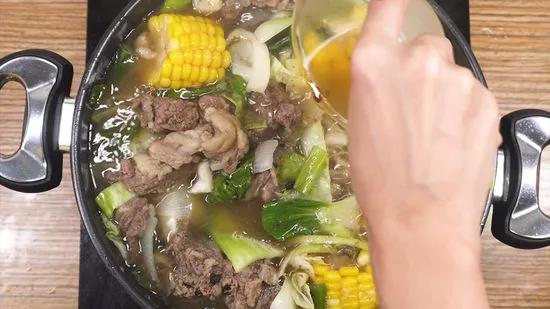
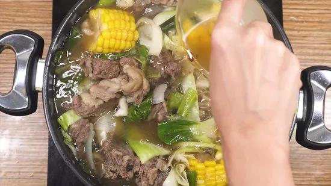

Bulalo is a beef dish from the Philippines. It is a light colored soup that is made by cooking beef shanks and bone marrow until the collagen and fat has melted into the clear broth that isperfect for rainy season.
Ingredients
- 1 kilo beef, bone-in
- water
- 1 medium onion, peeled and quartered
- 2 tablespoons fish sauce (patis)
- 1 table spoon peppercorns
- 3 pieces corn, husked and cut into 3 pieces
- 1 bunch pechay leaves, leaves separated
- 1 head cabbage, (small, cut into 6 pieces)
- salt
Procedure
Step 1: In a large pot over medium heat, put the beef shanks and add water to cover the meat. Boil for about 10 minutes, skimming scum that accumulates on top. Remove meat from water and wash under cold water to remove impurities. Discard liquid and rinse pot.
Step 2: Return the meat and add enough water to cover the meat. Bring to a boil. Remove the scum from time to time. Once the broth is clear, add onions, fish sauce, and peppercorns.
Step 3: Lower the heat, cover and let it simmer for 3 hours or until meat is fork tender.
Step 4: Add corn and simmer for 20 minutes. Season with salt to taste. Add the pechay and cabbage and cook for about 2 to 3 minutes.
Step 5: Serve and Satisfy your cravings!